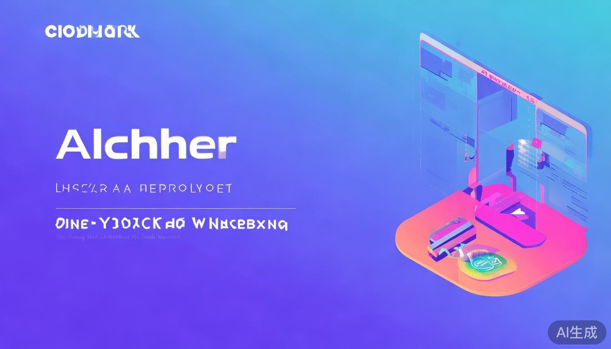

不用联网、不用 API Key、不用把对话交给云端——在你的电脑里跑一个开源大模型（DeepSeek-R1、Qwen、Llama）， 让本站的 chat 直接连上它，就像一个住在你硬盘里的「另一个你」。
把一个大模型的「大脑」装进你自己的电脑，让它像助手一样常驻本机、随叫随到。
通过 Ollama 在本地运行开源模型，如 DeepSeek-R1、Qwen、Llama。模型权重就存在你的硬盘里，不是别人的服务器上。
模型已下载到本地，对话时无需联网、无需调 API。飞机上、断网机房、内网环境，照常回答问题。
你输入的每句话、模型吐出的每个字，都只在「浏览器 localhost 本地模型」之间流转，不经过任何第三方。

装好、拉模型、启动服务，全程三条命令内搞定。
到官网 ollama.com 下载对应版本（Windows / macOS / Linux），一路下一步安装即可。
终端里执行下面任一条（deepseek-r1 擅长推理，qwen2.5 综合更强）：
安装后 Ollama 通常会自动在后台运行，监听默认端口 11434；若没有，手动执行：
本站的 AI 对话页已经内置了「本地 Ollama」预设，选一下就能和本机模型聊天。
进入 chat.html，点击右上角「 设置」，在「预设」下拉框里选择 本地 Ollama（开源模型）。
接口地址会自动填成 http://localhost:11434/v1/chat/completions、模型名 qwen2.5:7b、API Key 留空——保存后即可开聊，无需任何密钥。
按你的显存 / 内存量级选型，越大越聪明、越吃硬件。内存数字为建议最低可用内存。
| 模型 | ollama pull 命令 | 所需内存 | 是否需显卡 |
|---|---|---|---|
| deepseek-r1:7b | ollama pull deepseek-r1:7b |
≥ 8 GB | 可选（CPU 可跑，4GB+ 显存更流畅） |
| deepseek-r1:8b | ollama pull deepseek-r1:8b |
≥ 10 GB | 可选（建议 6GB+ 显存） |
| qwen2.5:7b | ollama pull qwen2.5:7b |
≥ 8 GB | 否（CPU 即可流畅运行） |
| qwen2.5:14b | ollama pull qwen2.5:14b |
≥ 16 GB | 建议（8GB+ 显存，纯 CPU 较慢） |
| llama3.1:8b | ollama pull llama3.1:8b |
≥ 10 GB | 可选（CPU 可跑） |
| gemma2:9b | ollama pull gemma2:9b |
≥ 10 GB | 可选（CPU 可跑） |
本地部署最容易踩的三个坑，都在这了。
换更小的模型（如 qwen2.5:1.5b / deepseek-r1:1.5b），或调低上下文长度 num_ctx；Ollama 也会在显存不够时自动把部分计算回退到 CPU。
先确认是否已有 Ollama 在跑：curl http://localhost:11434。确实被占时，换端口启动 OLLAMA_HOST=0.0.0.0:11435 ollama serve，并在 chat 设置里把地址改成对应端口。
国内网络拉取慢时，可配置代理或使用镜像源；下载前确认磁盘剩余空间充足（7B 模型约 4~5 GB），中途断掉直接重新执行 ollama pull 会断点续传。